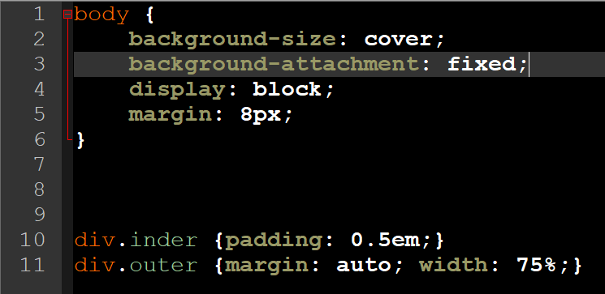

CSS - Cascading Style Sheets
Kort forklaring:
CSS eller Cascading Style Sheets kaldes også typografiark eller styleheet. CSS er et computer-sprog, der bruges til at "style" indhold af en HTML/XHTML/XML-dokument som bliver præsenteret i en browser.
Anvendelse CSS på min hjemmeside:
I min style.css fil.
- background-size: cover; For at få baggrunden til at fylde det hele.
- background-attachment: fixed; Brugt til at billdet ikke fremkommer flere gange på samme side.
- display: block; Hjælper teksten til at ståå på en linje.
- margin: 8px; Størelse af tekst.
- div.inder {padding: 0.5em;} Vælger hvor indholdet skal være fra siderne.
- div.outer {margin: auto; width: 75%;} Sikre at boxen er det rigtige sted.

I min HTML filer.
- <link href="style.css" type="text/css" rel="stylesheet"> Vælger den css fil som HTML filen relatere til.
- <div class="outer">Lukker outer
- <div class="inder">Lukker inder
- <body style="background-image:url(media/billede.jpg)"> Billede ud fra bil i Media mappen